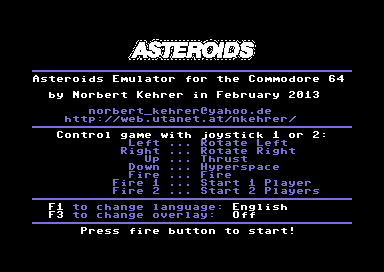
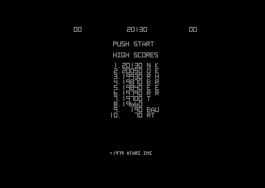
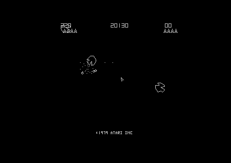
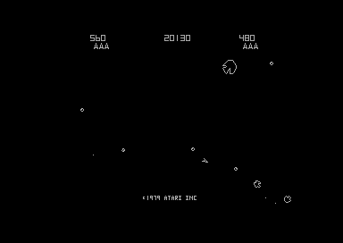
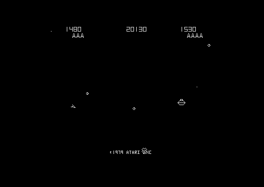
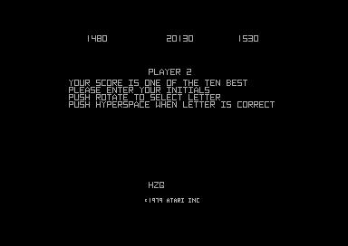

The program can be downloaded as a C64 "prg" file here: asteroid.prg
You can use this file with a C64 emulator or put it on a floppy disk and play it on the real machine.
There is also a version for a C64 with the so-called SuperCPU (20 MHz 6510-compatible processor) here: astscpu.prg
In the following you will first see some screenshots of the running game and then find a description of the emulator.
|  |  |
|  |  |
|  |  |
Here is a video of the emulator:
Here is the description:
1. The Asteroids Arcade Machine =============================== In 1979 Atari launched the aracade machine "Asteroids". The game was developed by Lyle Rains and Ed Logg and was one of the biggest successes in the history of video games. The game principle was implemented in the arcade machine as a so-called vector game with a 6502 CPU and Atari's custom-made video hardware, the Digital Vector Generator. Also the sound effects were not produced by a standard sound chip but were implemented with special circuitry for each effect. The arcade game was later ported to many different hardware platforms up to today's smartphone era. Not many of these ports offer the same pleasant and elegant game play as the arcade original, though. Even Atari's own versions for their home computers are not very close to the original. 2. Asteroids Emulator on the Commodore 64 ========================================= Since the nineties, arcade emulators like MAME can emulate the classics like Asteroids on the PC or the Mac. This program is an Asteroids emulator for the Commodore 64. The "emulation" of the arcade machine's CPU is done natively by the 6510 processor of the C64. The video and sound hardware is simulated by the Asteroids emulator program. In this way, the original arcade game program is executed and interpreted, and the original game play is (more or less) exactly reproduced. 3. Using the Emulator ===================== The Asteroids emulator is started by loading and running "asteroid.prg" on the C64. Then a start screen appears, where you can select your language with the F1 key. This selection corresponds to the DIP switch selection which the original arcade machine offered to the operators. The F3 key lets you choose, if you want to have a color overlay on the screen or not. Most actual Asteroids machines did not have such a transparent monitor overlay, but I exactly remember, that the first machine I played on had this overlay. It was made up of concentric colored circles. I first always thought the Asteroids graphics hardware is capable of producing these colors, until I noticed one day, that the overlay had slipped away a little, and you could see that it is only a transparent colored foil. This was somehow disappointing for me back then. By pressing the fire button you start the emulation. Asteroids is switched to free-play mode here, i.e. it is not necessary to "insert" coins. A game can be started in one-player mode with the fire button of the joystick in port 1. For a two players game you start with the port 2 fire button. It is the objective of the well-known game to destroy all Asteroid pieces with your space ship. The ship can be rotated left and right with the joystick and shots can be fired with the fire button. Moving the joystick up generates a thrust, moving it down performs a hyperspace jump. In two-player mode each player controls the game with the joystick in his respective port. Now have fun with the classic Asteroids on your classic Commodore 64 computer! Norbert